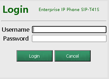
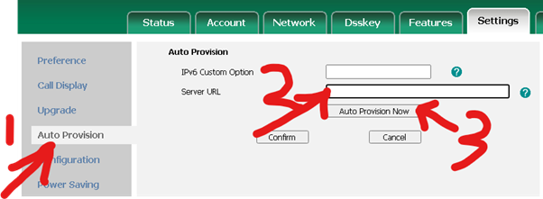
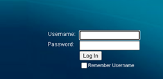

Deploy VOIP Phones
Provision Yealink Desktop Handset

Press “ok” on phone to get IP address
Log into handset IP from web-browser (default creds = admin/admin, after provisioning see .env or ask paul)
Auto-Provision handset

Settings tab:
Auto-provision (left side-bar)
Enter Server Url = https://dm-ipcomms.bt.com/dms/phone
“Auto-Provision”
Confirm
Provision Cisco ATA (Analogue adaptor for cordless)

Use angry IP scanner to find IP address
Log into SPA112 from web-browser
Log into handset IP from web-browser (default creds = admin/admin, after provisioning see .env or ask paul)
Set profile rule urls:
file Rule: https://dm-csb.yourwhc.co.uk/dms/Cisco_SPA-112/spa112-1-4-0.xml
file Rule B: https://dm-csb.yourwhc.co.uk/dms/Cisco_SPA-112/$MA.xml